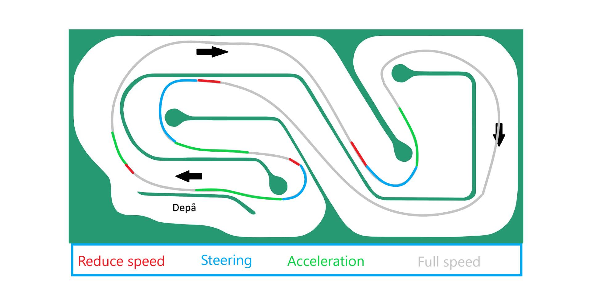
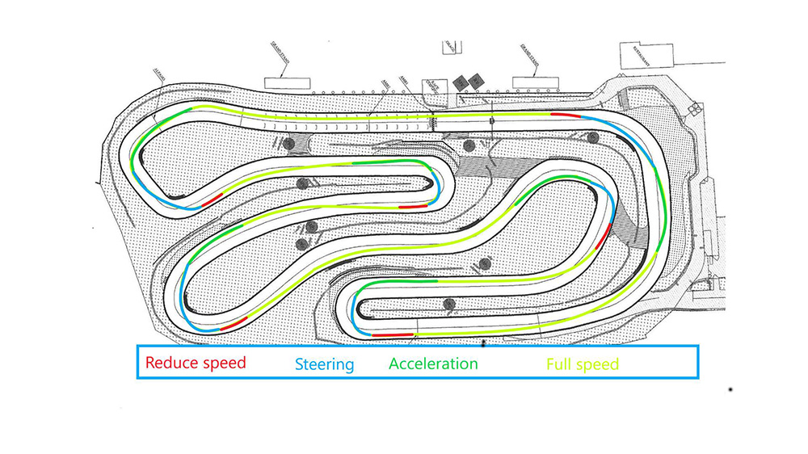

Upptäck våra inomhus- och utomhusbanor – perfekta för både nybörjare och erfarna förare.
Inomhusbanan är perfekt för dig som vill köra året runt i en kontrollerad miljö. Den är teknisk och kräver precision, med snabba kurvor och korta raksträckor. Här handlar det om att hitta rätt linjer och förbättra sin körteknik.

Utomhusbanan erbjuder högre hastigheter och längre sträckor. Med bredare kurvor och längre rakor får du chansen att verkligen trycka gasen i botten. Perfekt för dig som vill uppleva fart och adrenalinkickar på riktigt.
